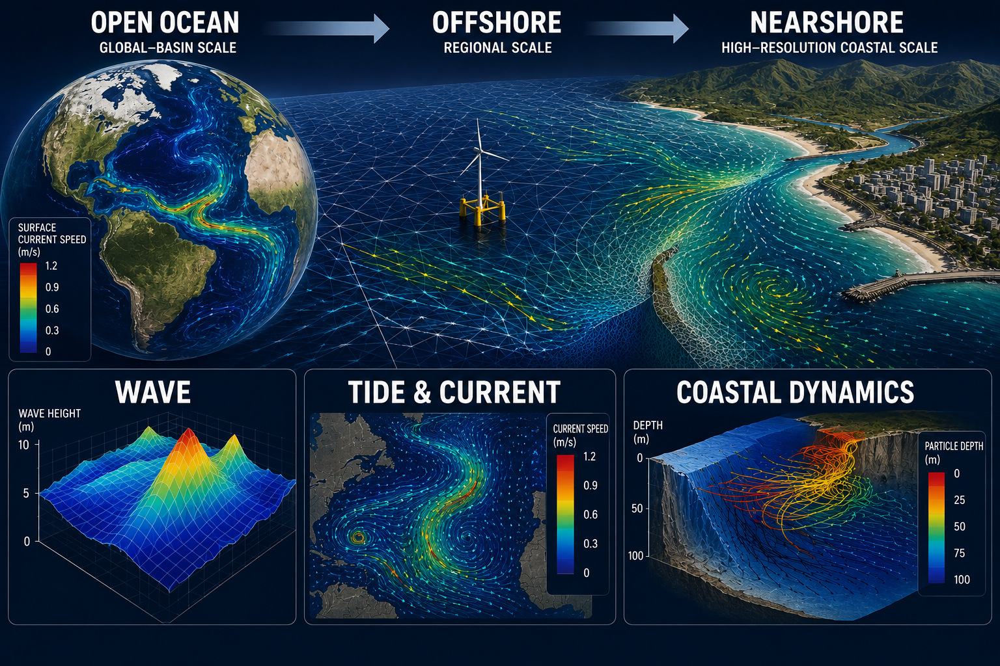
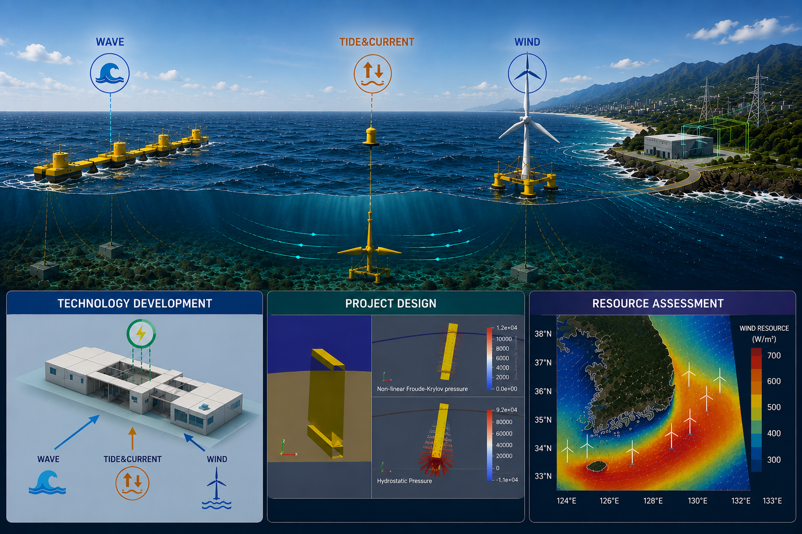
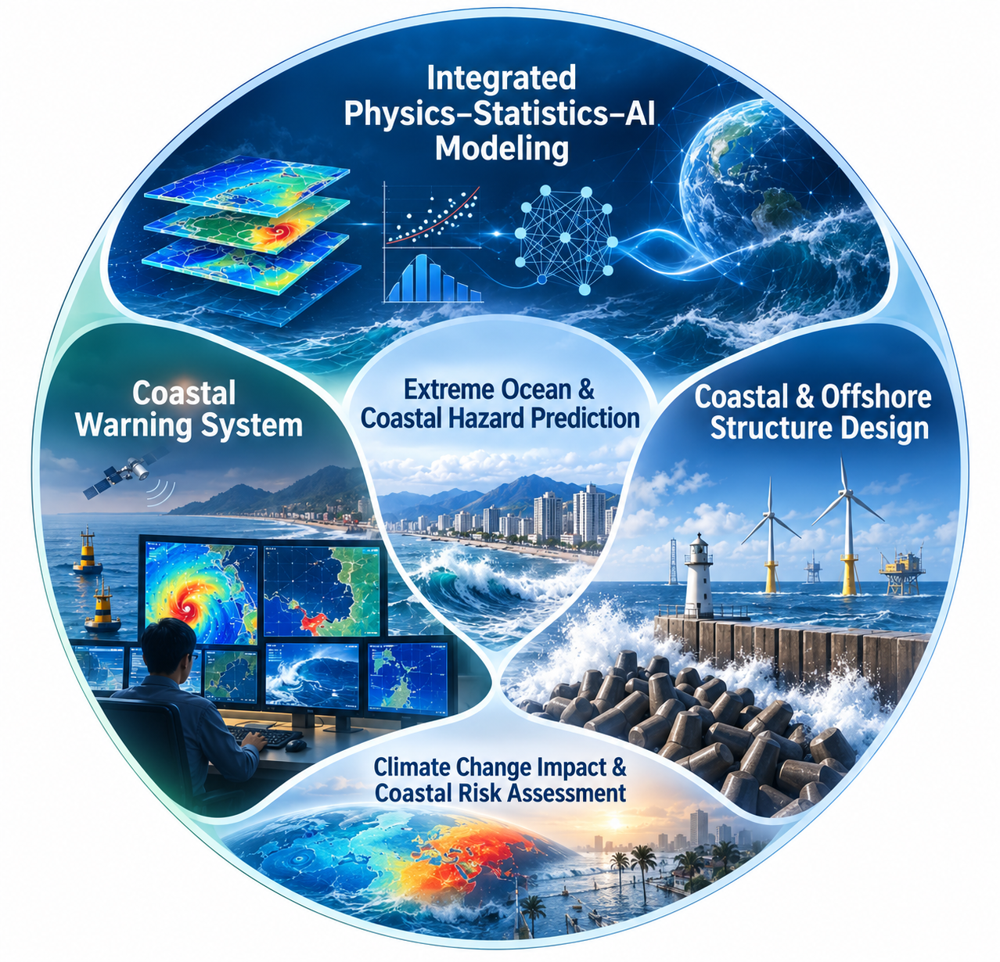

We integrate ocean and coastal modeling, observations, and data analytics to predict ocean environments, advance marine renewable energy, and enhance resilience to extreme ocean conditions and coastal hazards.


